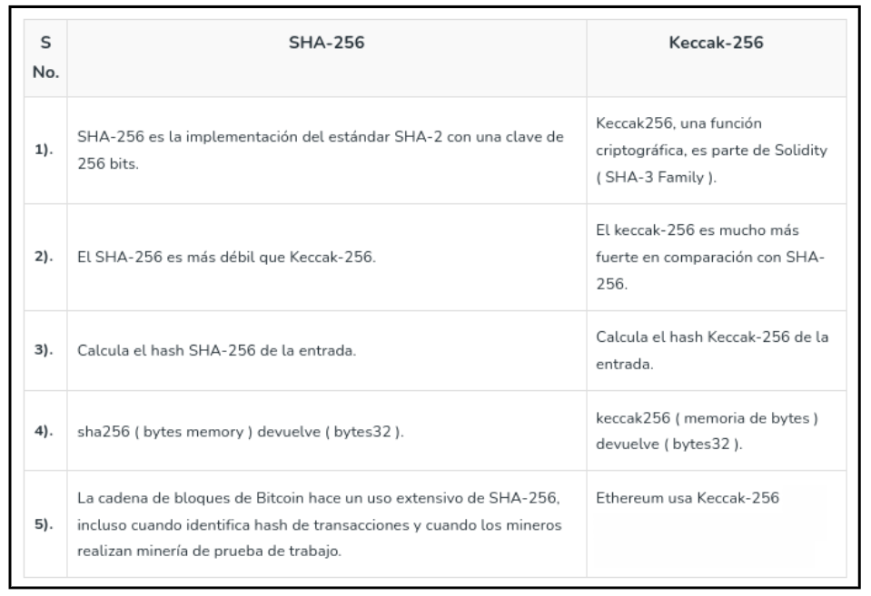

Keccak - El nuevo SHA-3
Este capÃtulo nos centraremos en el SHA-3 (Secure Hash Algorithm 3), es un estándar de función hash criptográfica diseñado por los criptógrafos Joan Daemen y Gilles Van Assche. El algoritmo utilizado en SHA-3 se llama Keccak, el cual fue seleccionado como el ganador del concurso organizado por el Instituto Nacional de Estándares y TecnologÃa (NIST) para encontrar un nuevo estándar de función hash criptográfica.
A diferencia de SHA-256, Keccak utiliza una estructura y operaciones diferentes. En lugar de rondas, Keccak se basa en una construcción llamada función de esponja (Sponge function), que se basa en una función pseudoaleatoria amplia o (permutation) pseudoaleatorio permitiendo ingresar "absorbing" y "squeezing".
Keccak-256 es una función hash criptográfica utilizada en Ethereum. Pertenece a la familia de algoritmos SHA-3 y se emplea ampliamente en la plataforma Ethereum para diversos propósitos.
Algunos casos de uso de Keccak-256 incluyen:
- Ethereum utiliza
Keccak-256para garantizar la integridad de los datos y generar identificadores únicos (hash) para verificar la autenticidad de los archivos y mensajes en sistemas criptográficos. - También se utiliza en la firma criptográfica de pequeño tamaño, donde en lugar de firmar la entrada completa, se firma el hash
Keccak-256del mensaje o dato. Keccak-256es utilizado para obtener una identificación única y determinista de una colección de datos. Por ejemplo, en Ethereum, las direcciones de Ethereum se derivan de claves públicas o contratos utilizando la función hash unidireccionalKeccak-256.
Las direcciones Ethereum son números hexadecimales, identificadores derivados de los últimos 20 bytes del hash Keccak-256 de la clave pública.
A diferencia de las direcciones de Bitcoin, que están codificadas en la interfaz de usuario de todos los clientes para incluir una suma de verificación incorporada para proteger contra direcciones mal escritas, las direcciones de Ethereum se presentan como hexadecimales sin ninguna suma de verificación.

El algoritmo Keccak utiliza la Sponge construction para procesar los datos de entrada de longitud variable para generar una salida de longitud variable. Esta construcción se basa en una función interna llamada "F" que opera en un número fijo de bits, denotado como "width" (anchura).
La anchura total del algoritmo Keccak se determina sumando dos componentes, el valor de "r" (rate) y el valor de "c" (capacity), donde b = r + c.
- El valor de
"r"representa la cantidad de bits absorbidos en cada paso de la función esponja, es decir, la capacidad de absorción de la esponja. Un valor de"r"más grande permite procesar más información en cada paso, lo que reduce la cantidad de pasos necesarios para procesar una entrada especÃfica. - El valor de
"c"representa la capacidad de la esponja, es decir, la cantidad de bits que se mantienen en el estado interno del algoritmo después de cada paso de absorción. Estos bits se mezclan con los datos de entrada y el resultado de la función interna"F". La capacidad afecta la resistencia del algoritmo a ataques criptográficos como colisiones o preimagen.
La suma de "r" y "c" da como resultado el número total de bits, "b", utilizados en la función esponja de Keccak. Este valor determina la longitud del estado interno y, por lo tanto, la longitud de la salida generada por el algoritmo.
Funcionamiento keccak
El algoritmo funciona de la siguiente manera, inicialmente la cadena de entrada se rellena con bits adicionales para enmascarar el mensaje inicial y se divide en bloques de longitud "r" bits. Luego, los "b" bits de estado se inicializan a 0, que da inicio a la Sponge construction en dos fases "absorbing" y "squeezing".
- Fase Absorbing: a los bloques de entrada de longitud
r-bitsse les aplica un XOR (toma dos bits y devuelve un resultado que es 1 si solo uno de los bits es 1, y 0 en caso contrario) a los primerosrbits del estado, alternándose con la funciónf. Cuando todos los bloques han sido procesados, se pasa a la siguiente fase. - Fase Squeezing: los primeros
rbits del estado son devueltos como bloques de salida, alternándose con ejecuciones de la funciónf. El número de bloques de salida es seleccionado por el usuario.
A continuación os dejamos una tabla que enumeran algunas de las diferencias entre SHA-256 y Keccak-256.

Vemos cómo cada tipo de criptografÃa o función hash tiene caracterÃsticas distintas. En el contexto actual de la computación cuántica en constante evolución, es crucial abordar las preocupaciones emergentes sobre seguridad. Algunos algoritmos criptográficos podrÃan ser vulnerables a los ataques cuánticos en un futuro cercano. Es en este punto donde entra en juego el concepto de criptografÃa Post-Quantum.